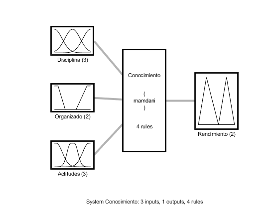

Sistema de Inferencia Difuso
Se realiza un sistema de inferencia difuso con Mamdani
Contents
Codigo
tabla = readtable('DataEstudiantes.csv'); %%Lee el archivo csv tabla Nombres= tabla.Nombre; datos= removevars(tabla,{'Nombre'}).Variables; %%Saca los datos numericos del archivo fis = readfis('Conocimiento.fis'); %%abre el sistema de inferencia difusa Reglas= fis.Rules %% Muestra las reglas plotfis(fis); %%Imprime el sistema resultados = evalfis(fis,datos); %%Almacena resultados datosFinales = [Nombres, num2cell(resultados)]; %%Genera una matriz de relacion for index =1: length(datosFinales(:,2)) if (resultados(index)>= 3) datosFinales(index,3)=cellstr("Paso"); %%Se acondiciona la salida al tipo Paso o no paso else datosFinales(index,3)=cellstr("No Paso"); end end datosFinales
tabla =
9×4 table
Nombre Disciplina Organizado Actitud
______________ __________ __________ _______
{'Carlos' } 6 0.2 7.05
{'Jumildo' } 7 0.8 6.35
{'Rene' } 3 0.4 4
{'Archumildo'} 4 0.9 6.86
{'Ana' } 7 0.29 10
{'Carolina' } 1 0.9 7
{'Gabriela' } 3 0.63 5
{'Jose' } 9 0.08 2.29
{'Pablo' } 8.5 0.9 8
Reglas =
1×4 fisrule array with properties:
Description
Antecedent
Consequent
Weight
Connection
Details:
Description
________________________________________________________________________________________________________
1 "Disciplina==Baja | Organizado==No_Organizado | Actitudes==Desinteresado => Rendimiento=No_paso (1)"
2 "Disciplina==Promedio | Organizado==Organizado | Actitudes==Normal => Rendimiento=Paso (1)"
3 "Disciplina==Mucha | Organizado==Organizado | Actitudes==Interesado => Rendimiento=Paso (1)"
4 "Disciplina==Promedio | Organizado==No_Organizado | Actitudes==Desinteresado => Rendimiento=No_paso (1)"
datosFinales =
9×3 cell array
{'Carlos' } {[2.4177]} {'No Paso'}
{'Jumildo' } {[2.7960]} {'No Paso'}
{'Rene' } {[2.4856]} {'No Paso'}
{'Archumildo'} {[2.4091]} {'No Paso'}
{'Ana' } {[2.9063]} {'No Paso'}
{'Carolina' } {[2.4293]} {'No Paso'}
{'Gabriela' } {[2.5017]} {'No Paso'}
{'Jose' } {[2.4074]} {'No Paso'}
{'Pablo' } {[4.0551]} {'Paso' }
